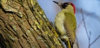

Appelvink
De appelvink is een fraai gekleurde, forse vink met een krachtige snavel. Met haar dikke, oranje kop en grijze stierennek oogt de vogel wat clownesk.
Appelvink
De appelvink is een fraai gekleurde, forse vink met een krachtige snavel. Met haar dikke, oranje kop en grijze stierennek oogt de vogel wat clownesk.
Bonte vliegenvanger
De bonte vliegenvanger is een zwart-witte zangvogel die graag in nestkasten broedt. De soort brengt veel tijd door in de boomkruinen.
Boomklever
De boomklever is een echte bosvogel. Hij klautert schokkerig maar behendig alle richtingen uit op boomstammen, ook ondersteboven.
Gaai
De gaai is een luidruchtige, bont gekleurde vogel met een opvallend witte stuit. Hij legt een wintervoorraad aan van eikels en beukennootjes.
Goudhaan
De goudhaan is met z’n 8,5 cm het kleinste vogeltje van Europa. Ze hebben een uitgesproken voorkeur voor sparren.
Groene specht
De groene specht is onmiskenbaar door zijn knalrode kruin en zwart masker. Ze verraadt haar aanwezigheid vooral door haar lachende roep.
Kauw
De kauw is een luidruchtige, gedrongen vogel, zwart met een grijs achterhoofd. Hij is vooral bekend doordat hij in schouwen en op kerkzolders broedt.
Keep
De keep is de noordelijke tegenhanger van onze vink. Met zijn oranje borst en vleugeltekening is de vogel een opvallende winterse verschijning.
Koolmees
De koolmees is één van de talrijkste tuinvogels. Met zijn gitzwart petje, witte wangen en citroengele buik, is het een gemakkelijk herkenbare soort.
Kuifmees
De kuifmees is met haar markante zwart-witte koptekening en de spitse, driehoekige kuif een fraaie vogel. De soort komt enkel in Europa voor.
Staartmees
De staartmees lijkt op een pluizig bolletje wol met een aangeplakte staart. Ze trekt meestal in kleine familiegroepjes snel en rusteloos door de tuin.
Winterkoning
De winterkoning is één van de kleinste broedvogels in Europa. Met zijn opgewipt staartje en heldere zang is het een opvallende verschijning.